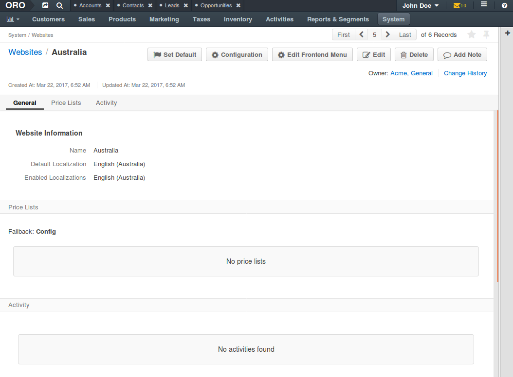

Edit Front Store Menu¶
OroCommerce Front Store has a number of menus that may be rearranged and customized.
To customize a Front Store menu for the website:
Navigate to System > Websites using the main menu.

Click on the website you would like to edit menu for (e.g. Australia).
On the website details page, click Edit Frontend Menu.
Now you are redirected to the list of OroCommerce Front Store menus:
Click on the menu to start customizing it:
Drag-and-drop items to rearrange them.
Create new items and dividers if necessary by clicking Create Menu Item or Create Divider (in the button group at the top right of the page).
Click on the menu item to edit its details.
Find more information in the Menu Management section.
Once you are happy with the menu contents, click Save.